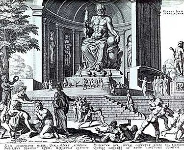

Ста́туя Зе́вса Олімпі́йського — одне з античних Семи чудес світу — давньогрецька статуя Зевса роботи Фідія, встановлена в центрі Храму Зевса в Олімпії на півострові Пелопоннес (Західна Греція).
|  |
|---|
| Химерна реконструкція статуї Зевса роботи Фідія |
| на гравюрі Філіпа Галле 1572 року по малюнку |
| Мартена ван Гемскерка |
Зевс зображався хризелефантовою скульптурою — виконаною зі слонової кістки та золотих панелей на дерев'яному каркасі. Жодної достеменно точної копії в мармурі чи бронзі не збереглося, хоча є приблизні зображення на монетах сусідньої Еліди, а також на римських монетах і різьблення на дорогоцінних каменях. Висота складала близько 12 м.
Географ Страбон на початку I століття до н. е. зазначив, що статуя справляла «враження, ніби коли Зевс встане і випростається, то проб'є дах храму».
Географ і мандрівник II століття нашої ери Павсаній залишив детальний опис: статуя була увінчана скульптурним вінком з оливкового листя і носила позолочені шати, виготовлені зі скла і прикрашені різьбленими тваринами й ліліями. Права рука Зевса тримала невелику хризелефантову статую коронованої Ніки, богині перемоги. Ліва тримала скіпетр, інкрустований багатьма металами, на якому сидів орел. Трон був прикрашений золотом, дорогоцінним камінням, чорним деревом і слоновою кісткою. Золоті сандалі Зевса спиралися на підставку для ніг, прикрашену рельєфом з амазономахією (зображенням битви амазонок). Трон оточували розмальовані екрани.
Павсаній також розповідав, що статую постійно покривали оливковою олією, щоб протидіяти шкідливому впливу «болотистості» Альтіського гаю на слонову кістку. Підлога перед скульптурою була вимощена чорною плиткою та оточена вивищеною мармуровою окантовкою, щоб олія не розтікалася. Цей резервуар з олією також виконував роль дзеркала, яке візуально подвоювало висоту статуї.
За словами римського історика Тіта Лівія, римський полководець Емілій Павло, завойовник Македонії, бачив статую на власні очі та «був зворушений у своїй душі, ніби він бачив бога особисто». Оратор Діон Хризостом стверджував у I ст. н. е., що один-єдиний погляд на статую змусить людину забути всі свої земні біди.
Легенда стверджує, що Фідій, бувши в захваті від Пантаркеса, юного переможця змагань з боротьби серед хлопчиків на 86-й Олімпіаді, вирізьбив напис «Пантаркес прекрасний» на мізинці Зевса, а також помістив барельєф хлопчика, що увінчує себе, біля ніг статуї.
За легендою, коли Фідія запитали, що його надихнуло — чи він піднявся на гору Олімп, щоб побачити Зевса, чи Зевс спустився з Олімпу, щоб Фідій міг його побачити, — митець відповів, що зобразив бога згідно з «Іліадою» Гомера, Книгою 1, віршами 528—530.
Мовив Кротон, чорногустими здвигнувши бровами.
І з голови владаревої кучерів пасма нетлінні
Впали на плечі безсмертні, й великий Олімп похитнувся.
За словами Павсанія, «коли зображення було повністю закінчене, Фідій молився богові, щоб він показав знаком, чи йому до вподоби робота. Одразу ж, як свідчить легенда, блискавка влучила в ту частину підлоги, де аж до наших днів стоїть мідний глечик, закриваючи те місце».